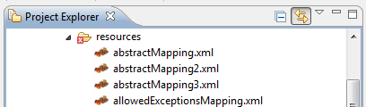

http://dozer.sourceforge.net/eclipse-pluginPrerequisites
The Plugin currently depends on
Installation
The Dozer Plugin-feature can be installed and updated using the Eclipse Update Manager.
-
Add a new Update-URL:
Select all required dependencies and install the plugin.
Alternatively you can download the package at sourceforge and unzip it in your eclipse installation folder. You might have to enable the Plugin after starting Eclipse. This can be done at Help > Software Updates > Manage Configuration.
After installation is done you should see a little red dozer-icon on all
your mapping-xml files.
